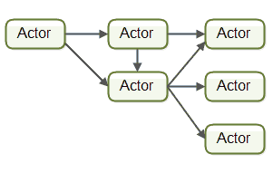

并发 vs 并行
介绍并发模型前，我们先来理解一下并发和并行的区别，下边这张图说明了两者之间的区别：
- 并发：一个处理器同时处理多个任务。
- 并行：多个处理器或者是多核的处理器同时处理多个不同的任务.
并发性 vs 并行性
- 并发性(concurrency)，又称共行性，是指能处理多个同时性活动的能力，并发事件之间不一定要同一时刻发生。
- 并行(parallelism) 是指同时发生的两个并发事件。
并行具有并发的含义，而并发则不一定并行。
并发模型
并发模型分类
并发编程模型按照实现方式可以分为两类：
- 共享状态并发（Shared state concurrency）
- 消息传递并发（Message passing concurrency）
共享状态并发
共享状态并发涉及到可变状态（Mutable state，即内存可修改）的概念。大多数语言，如 C、Java、C++ 等等，都有这个概念，即有一种叫内存的东西，我们可以修改它。
在只有一个进程（或线程）工作的情况下，这个模式可以很好地运行。但如果有多个进程共享和修改相同的内存，就会产生问题和危险。
为了防止同时修改共享内存，我们需要一个锁机制。你可以称它为互斥量或同步方法，但它本质上仍然是锁。
如果程序在关键区域发生崩溃（例如，当它在持有锁的时候）就会有灾难的发生：其他所有的进程都不知道该做什么。
多线程模型就是通过共享状态实现的并发，代表语言有：Java, C#, C++。
同时，根据上边的内容可以推导出：
不可变数据结构（Immutable） = 没有锁
不可变数据结构（Immutable）= 易于并发
消息传递并发
在消息传递并发中，不存在共享状态。所有计算都是在进程中完成的，交换数据的唯一方法是通过异步消息传递。
如何理解这句话？
想象一群人，他们没有共享的状态。
我有自己的记忆，同时你也有你的记忆。它们是不共享的。我们通过传递信息（如，说话）进行交流，我们根据接收到的这些消息更新私有状态（也就是自己的记忆）。
Actors 模型 和 CSP 模型 是通过消息传递实现的并发。
- Actors 代表语言：Erlang, Scala, Rust
- CSP 代表语言：Golang
Actors vs CSP
对于多线程模型大部分开发人员都是比较熟悉的，也知道它存在很多缺点，如：死锁、不易伸缩。
接下来的内容我们重点对两个基于消息传递并发的模型来进行介绍和对比，Actors 和 CSP 是实现程序并行工作的两种最有效的模型。
Actors 模型，顾名思义，侧重的是 Actor。每个 Actor 与其他 Actor 进行直接通信，不经过中介，且消息是异步发送和处理的。

CSP 是 Communicating Sequential Processes（通信顺序进程）的简称。在 CSP 中，多了一个角色 Channel，Worker 之间不直接通信，而是通过 Channle 进行通信。
Channel 是过程的中间媒介，Worker1 想要跟 Worker2 发信息时，直接把信息放到 Channel 里（在程序中其实就是一块内存），然后 Worker2 在方便的时候到 Channel 里获取。
Channel 类似 Unix 中的 Pipe，后文将 Channel 称为通道。

CSP 是完全同步的。通道的写入方在接受方读取前会被一直阻塞。这种基于阻塞机制的优点是一个通道只需要保存一条消息，在很多方面也更容易推理。
Actors 的发送方是异步的。无论消息接收方是否将消息读取出来，发送方都不会阻塞，而是将消息放入通常称为邮箱（mailbox）的队列中。这提供了很多的便利，但困难之处在于邮箱可能需要容纳大量的信息。
CSP 进程使用通道（channel）进行通信。程序可以将通道作为第一类对象（first class objects）创建并传递。Actors 有地址系统和收件箱，每个进程只有一个地址。在耦合度上两者是有区别的，CSP 更加松耦合。
在 CSP 中，发送和接收操作可能会阻塞。在 Actors 模型中，只有接收操作可能被阻塞。
在 CSP 中，消息是按发送顺序传递的，而在 Actors 模型中不是这样。事实上，系统可能根本无法传递某些消息（意味着消息可能会丢失）。
到目前为止，CSP 模型在一台机器上工作得最好，而 Actors 模型很容易实现跨多台机器的扩展。
结论
Actors 更适合于分布式系统。
由于 CSP 具有阻塞性，因此很难在多台计算机中使用它们。